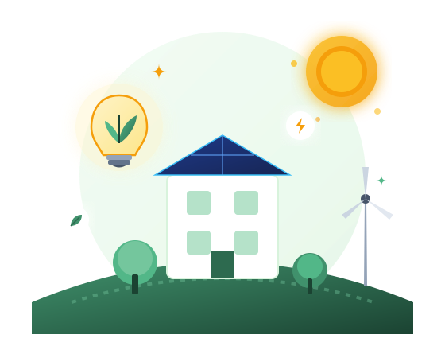

Hemat Energi
Mengurangi konsumsi listrik yang tidak diperlukan tanpa mengurangi kenyamanan belajar-mengajar di kelas.
Setiap lampu yang dimatikan, setiap perangkat yang digunakan dengan bijak, dan setiap kebiasaan kecil dapat membantu menciptakan lingkungan sekolah yang lebih hemat dan berkelanjutan.

Mengurangi konsumsi listrik yang tidak diperlukan tanpa mengurangi kenyamanan belajar-mengajar di kelas.
Menurunkan emisi karbon dan jejak ekologis sekolah dengan menjaga kestabilan pasokan energi bumi.
Membangun karakter siswa, guru, dan warga sekolah agar senantiasa sadar energi di mana pun berada.
Penggunaan energi yang tidak bijak dapat menyebabkan pemborosan sumber daya dan meningkatkan dampak terhadap lingkungan. Karena itu, kebiasaan sederhana di sekolah dapat menjadi langkah awal untuk menggunakan energi secara lebih bertanggung jawab.
Sebagian besar energi masih dihasilkan dari bahan bakar fosil yang terbatas jumlahnya.
Efisiensi listrik berdampak langsung pada pengurangan emisi gas rumah kaca global.
Kebiasaan positif yang ditanamkan di sekolah akan terbawa hingga ke rumah dan masyarakat.
Prinsip Education for Sustainable Development dalam Kampanye Energi
Berikut adalah kebiasaan sederhana yang dapat langsung diterapkan di ruang kelas dan lingkungan sekolah sehari-hari.
Selalu matikan sakelar lampu ketika ruang kelas kosong saat jam istirahat atau sepulang sekolah.
Adaptor dan charger yang tetap tercolok terus menarik daya listrik tersembunyi (phantom power).
Pastikan proyektor, komputer lab, kipas angin, dan pendingin ruangan dimatikan saat tidak ada aktivitas.
Buka jendela dan tirai di siang hari untuk memanfaatkan sinar matahari alami dan sirkulasi udara bersih.
Mulai dari satu kebiasaan kecil hari ini untuk masa depan sekolah yang lebih hijau.
Pelajari Kampanye